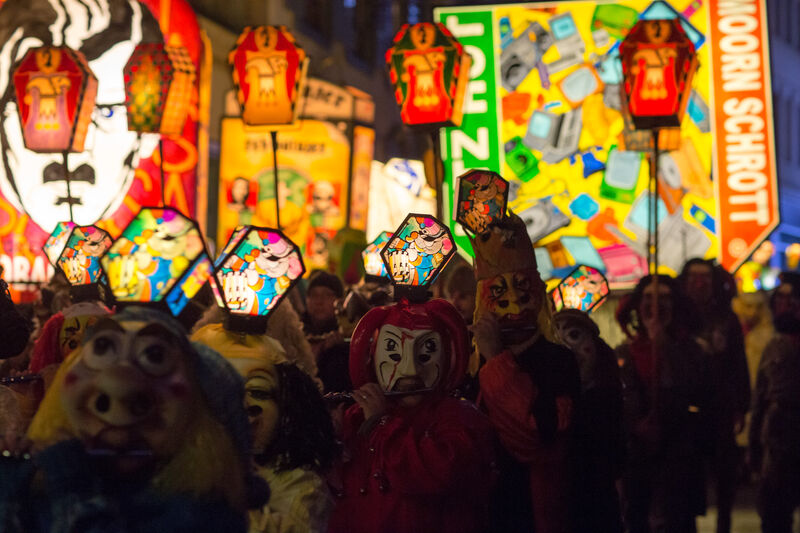
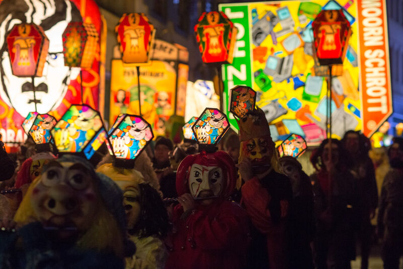
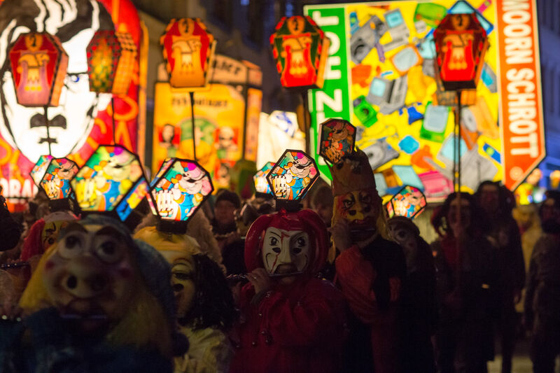

The external link is not only a monument of Swiss culture of national importance, but also the most mysterious "place of power" in Switzerland. His story is directly connected with the powerful European royal Habsburg-Alsace-Lorraine house. Founded in 1027, the monastery was inhabited by Benedictine monks from the neighboring, equally important monastery of Einsiedeln. In the 80-90s of the 17th century, it was rebuilt, at the same time the present church at the monastery with two unusual sharp spiers appeared. This church is unusual not only on the outside and not only with its very fascinating stained glass windows.
